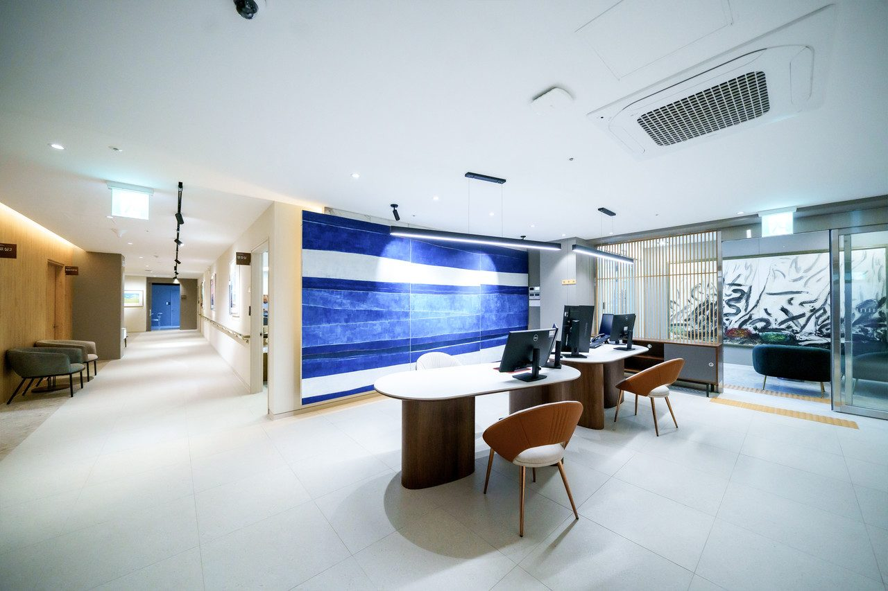
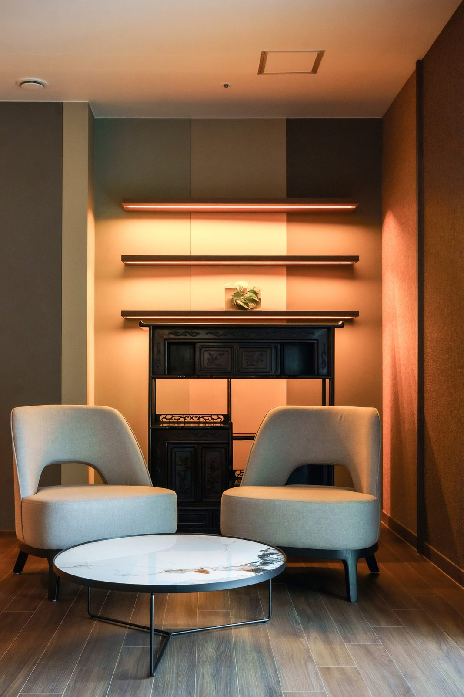

암요양병원 입원 전, 상담 전에 많이 묻는 질문입니다
입원 서류, 단기입원, 비용, 면회, 야간 대응처럼 상담 전에 많이 묻는 질문에 하일렌요양병원이 답합니다. 자주 묻는 질문입니다. 입원·외래 이용 안내를 중심으로 답합니다. 암 관련, 입퇴원 관련, 병원 관련, 프로그램 관련, 비용 관련 순서로 모았습니다. 궁금한 점 있으시면 언제든 물어보세요.

- 분류
- 암 관련 · 입퇴원 관련 · 병원 관련 · 프로그램 관련 · 비용 관련
- 문의
- 원내 상담실 · 카카오톡 채널 · 062-439-1000
암 관련
항암 중에 요양병원에 꼭 가야 하나요?
하일렌요양병원은 전남광주 서구에 있는 암요양병원으로, 암 치료 과정의 회복을 돕는 곳입니다. 암 치료 자체는 현재 진료중인 대학병원에서 이어지고, 그 사이의 회복은 하일렌요양병원이 입원과 외래로 관리합니다. 입원과 외래 이용 여부는 지금 몸 상태에 필요한 치료를 기준으로 원내 상담실과 함께 정합니다. 자세한 안내는 단기입원·외래 안내에서 확인하실 수 있습니다.
입원하지 않고 외래로만 이용할 수 있나요?
외래 회복치료는 통원으로 이용할 수 있습니다. 외래 회복치료 7종은 단기입원·외래 안내에서 확인하실 수 있습니다. 외래 일정은 원내 상담실에서 안내합니다.
항암 후 밤이나 주말에 증상이 생기면 어디로 연락하나요?
항암 뒤 집에서 열이 나거나 응급실에 가야 할지 망설여질 때 연락할 곳과 열의 기준 숫자는 대학병원·암병원에서 안내받은 기준을 따르시고, 응급 여부의 최종 판단도 대학병원·암병원이 합니다. 입원해 계실 때는 먼저 병동 간호사에게 알려 주십시오. 주치의가 확인해 처치를 정합니다.
수술 부위는 누가 살피나요?
수술 부위 관리는 수술한 병원의 지침을 그대로 지켜 간호팀 및 주사·상처관리팀이 이어서 살핍니다. 수술 부위·배액관·케모포트·장루는 간호팀 및 주사·상처관리팀이 계속 살핍니다. 소독 여부와 간격은 대학병원·암병원 지침대로 하고, 소독 자체는 원내에서 합니다. 상처 상태는 사진을 곁들여 주치의에게 알리고, 주치의가 그날 확인합니다. 소독 주기를 원내에서 새로 정하거나 지침에 없는 소독약·연고를 더하지 않습니다. 암종별 안내는 암종별 회복 안내에서 확인하실 수 있습니다.
배액관을 단 채 입원할 수 있나요?
배액관을 단 채로 입원하실 수 있습니다. 유지하는 동안의 관리부터 뺀 자리가 아무는 경과까지 간호팀 및 주사·상처관리팀이 이어서 봅니다.
케모포트가 있어도 입원할 수 있나요?
케모포트를 넣은 채로도 입원할 수 있습니다. 입원 중 수액·약물 투여와 소독, 바늘 관리는 원내 의료진 및 주사·상처관리팀에서 대학병원·암병원 지침 그대로 맡아 살핍니다. 케모포트로 항암제를 투여하는 중에 입원하시면 케모포트 관리 및 제거는 대학병원·암병원 지침에 따라 시행합니다.
수술 후 식사는 어떻게 나오나요?
입원 식사는 환자 상태에 맞춰 주치의가 처방하며, 치료식 종류(일반식 · 항암식 · 위절제식 · 저잔사식 · 저염식 · 저요오드식 등) 가운데 고릅니다. 식사에 대해 궁금한 점 있으시면 언제든 물어보세요. 입원 중 식사는 입원 안내에서 확인하실 수 있습니다.
수술 후 죽은 언제까지 먹나요?
밥 형태는 미음, 죽, 진밥, 밥 네 단계로 나누고, 어느 단계로 드실지는 원내 주치의가 처방으로 정합니다.
암 수술 후 걷기는 얼마나 해야 하나요?
수술 뒤 처음 걷기 시작하는 시점은 수술병원 의료진이 정합니다. 회복 입원 뒤에는 주치의가 정한 범위 안에서 걷는 양을 조금씩 늘려 갑니다. 운동 범위는 주치의가 환자 상태를 보고 환자와 상담을 통해 결정합니다. 암재활 그룹 운동치료에는 걷기 운동 프로그램이 따로 없습니다. 자세한 안내는 암정보 도서관에서 확인하실 수 있습니다.
입퇴원 관련
전화 상담에서 무엇을 물어보면 되나요?
전화하시기 전에 받고 계신 치료와 다음 치료 날짜, 혼자 걷고 식사하실 수 있는지를 적어 두시면 상담이 빨라집니다. 다음 치료 날짜를 말씀해 주시면 그 일정에 맞는 입원 가능일을 원내 상담실이 안내합니다.
방문 상담은 어떻게 하나요?
방문 상담을 원하시면 원내 상담실과 오실 날짜를 먼저 맞추십시오. 오실 때는 드시는 약의 목록, 물어볼 것을 적은 메모, 소견서나 진료기록지(있는 경우)를 가져오시면 됩니다.
입원 준비물과 서류는 무엇을 챙겨야 하나요?
서류와 드시던 약처럼 챙길 것은 입원 안내에서 확인하실 수 있습니다. 입원 상담 때 궁금한 점 있으시면 언제든 물어보세요.
입원은 보통 얼마나 하나요?
입원 기간은 몸 상태와 치료 일정을 보고 진료에서 정합니다. 지내 보시고 늘리거나 앞당겨 퇴원하실 수도 있습니다.
첫 항암을 받고 며칠 있어야 하나요?
첫 항암 뒤 며칠을 머물지는 날짜로 미리 정하기보다 식사, 원내 혈액검사 결과, 다음 치료 일정까지 보고 주치의와 상의해 정합니다. 두 번째 항암부터는 첫 항암 때의 경과를 바탕으로 기간을 새로 정할 수 있습니다. 하일렌요양병원의 단기입원은 1박 2일부터 치료 일정에 맞춰 이용할 수 있습니다. 단기입원 상담은 원내 상담실에서 안내합니다. 자세한 안내는 단기입원·외래 안내에서 확인하실 수 있습니다.
입원 상담에서 보호자 동반 여부는 어떻게 정하나요?
보호자 동반 여부는 입원 상담 때 함께 여쭤 보고 안내합니다. 간병이 따로 필요 없거나 단기간의 가족 간병으로 충분한 분이 입원하십니다. 자세한 내용은 입원 안내에서 확인하실 수 있습니다.
입원 중에도 지금 다니는 대학병원·암병원 외래를 계속 다닐 수 있나요?
입원 중에도 대학병원·암병원 외래는 그대로 다닙니다. 입원 중 다른 병원 외래 진료에 필요한 진료의뢰서는 원내 주치의가 작성합니다. 자세한 안내는 단기입원·외래 안내에서 확인하실 수 있습니다.
입원 중에 유전자 검사나 결과 상담 외래를 다녀올 수 있나요?
유전자 검사와 유전 상담, 결과 해석은 치료받으시는 병원에서 받으시고, 입원 중 그 외래가 잡히면 주치의가 진료의뢰서를 미리 준비합니다.
가족이 면회를 오기 전에 확인할 기준은 어디에 있나요?
면회 기준은 오시는 길과 함께 적어 둔 오시는 길·면회 안내 쪽에 있습니다. 입원 생활 전반은 입원 안내에서 보실 수 있습니다.
입원해 있는 동안 밤에 몸이 불편하면 어떻게 알리나요?
병동 간호사에게 먼저 알려 주십시오. 알려 주신 내용은 주치의가 확인해 처치를 정합니다. 야간 대응은 입원 안내에서 확인하실 수 있습니다.

병원 관련
하일렌요양병원은 어디에 있나요?
하일렌요양병원은 전남광주통합특별시 서구 상무대로 1176에 있습니다. 지도와 면회 안내는 오시는 길·면회 안내에서 확인하실 수 있습니다.
일반 요양병원과 무엇이 다른가요?
수술·항암·방사선 치료를 받는 동안 회복이 필요하신 분이 치료 일정에 따라 며칠씩 머무는 곳이 하일렌요양병원입니다. 수술 직후 집으로 가기 전, 항암 주사 직후의 힘든 며칠, 방사선 치료 기간이 여기에 해당합니다. 암 치료 자체는 현재 진료중인 대학병원에서 이어 가시고, 그 사이 식사·상처 관리·증상 처방을 하일렌요양병원이 맡습니다. 하일렌요양병원은 전남광주 서구에 있는 암요양병원으로, 암 치료 과정의 회복을 돕는 곳입니다. 하일렌요양병원에는 간병사와 간병비가 없습니다. 장기간 간병이 필요하시면 일반 요양병원을 안내해 드립니다. 자세한 안내는 입원 안내에서 확인하실 수 있습니다.
연휴와 명절에도 치료를 받을 수 있나요?
연휴에 이어지는 치료와 쉬는 날은 소식의 월별 프로그램 안내와 카카오톡 채널 공지에서 확인하실 수 있습니다. 명절·연휴 기간에는 원내 혈액검사를 하지 않습니다. 명절이나 연말연시 연휴 기간의 입원 접수와 외래 운영, 면회가 평소와 같은지는 오시기 전에 원내 상담실에 확인해 주십시오.
프로그램 관련
비용 관련
한 달에 비용이 얼마나 드나요?
비급여 항목과 금액은 기준일을 밝힌 표로 비급여 항목 안내 쪽에 게시합니다. 입원 비용은 입원 형태와 기간, 받으시는 치료 항목에 따라 달라집니다. 그래서 총액을 한마디로 말씀드리기 어렵고, 상담에서 치료 일정을 두고 항목별로 안내합니다. 월 합계를 미리 정해 안내하지 않고, 실제 청구 금액은 처방 확정 후 원무과에서 안내합니다.
하일렌요양병원 상급병실료는 하루 얼마인가요?
1일 기준으로 2인실 200,000원, 1인실 250,000원, 특실 300,000원, VIP실 350,000원입니다. 상급병실료는 건강보험이 적용되지 않아 전액 본인 부담입니다. 자세한 안내는 비급여 항목 안내에서 확인하실 수 있습니다.
고주파온열암치료 비용은 얼마인가요?
200,000원에서 350,000원 사이에서 정해집니다. 자세한 안내는 비급여 항목 안내에서 확인하실 수 있습니다.
저출력 레이저 치료(림프부종) 비용은 얼마인가요?
저출력 레이저 치료(림프부종)는 200,000원입니다(LTU-904 장비). 비급여 항목 전체와 기준일은 비급여 항목 안내에서 확인하실 수 있습니다.
진단서와 진료기록 사본 발급 비용은 얼마인가요?
진단서와 소견서는 각 10,000원, 입원·통원·진료확인서는 각 2,000원입니다. 진료기록 복사본은 1~5매까지 1매당 1,000원, 6매부터는 1매당 100원이며, 영상의학자료(CD) 사본은 1매 10,000원입니다. 자세한 안내는 비급여 항목 안내에서 확인하실 수 있습니다.
금액이 하나가 아니라 범위로 적힌 항목은 왜 그런가요?
용량·투여 횟수·치료 부위에 따라 실제 비용이 달라지는 항목이기 때문입니다. 예를 들어 메리트C 주사는 10g에서 100g까지 용량에 따라 30,000원에서 150,000원 사이입니다. 실제 청구 금액은 처방 확정 후 원무과에서 안내합니다. 자세한 안내는 비급여 항목 안내에서 확인하실 수 있습니다.
비급여 항목도 건강보험으로 처리되나요?
건강보험은 적용되지 않아 전액 본인이 부담합니다. 실제 청구 금액은 처방 확정 후 원무과에서 안내합니다. 자세한 안내는 비급여 항목 안내에서 확인하실 수 있습니다.
암요양병원 실비(실손보험)는 되나요?
실손보험의 보장 여부는 가입하신 보험사와 계약 내용에 따라 다르므로 가입한 보험사에 확인해 주세요. 보험 청구에 쓰는 진단서·소견서·입원확인서 등의 발급 비용은 비급여 항목 안내 쪽에 있습니다.
본인부담상한액 환급과 실손보험이 겹치면 어떻게 되나요? 보험사가 입원 조사를 나온다는데요.
본인부담상한액 환급은 국민건강보험공단에, 실손보험 처리와 보험사의 입원 확인 절차는 가입한 보험사에 확인해 주세요. 확인에 필요한 서류 발급은 원무과에서 안내합니다.
비급여 항목 전체와 기준일은 비급여 항목 안내에서 확인하실 수 있습니다.
입원·외래·단기입원 상담은 원내 상담실에서 안내합니다. 궁금한 점 있으시면 언제든 물어보세요.
제공 하일렌요양병원 · 갱신 2026-10-21